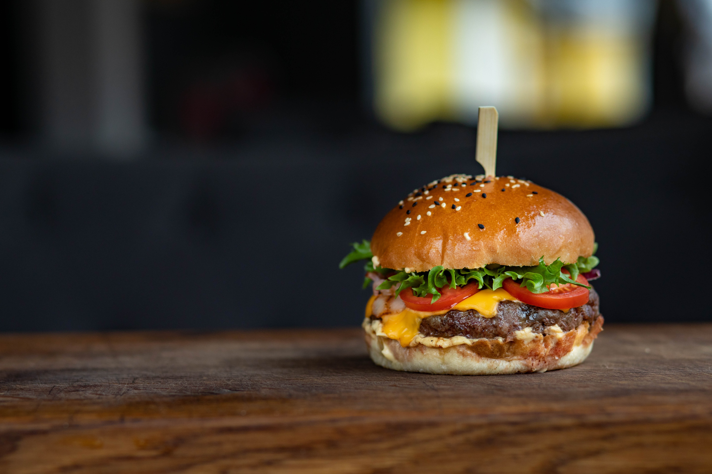

<ion-header>
  <ion-navbar color="primary">
    <ion-title>
      Restaurante do Niko
    </ion-title>
  </ion-navbar>
</ion-header>

<ion-content padding class="card-background-page">

  <ion-list>

    <ion-card (click)="abrePratoDia()">
      <!-- Photo by Vince Rvd from Pexels -->
      
      <div class="card-title">
        <span>Prato do dia</span>
      </div>
    </ion-card>

    <ion-card (click)="abreLanches()">
      
      <div class="card-title">
        <span>Lanches</span>
      </div>
    </ion-card>

    <ion-card (click)="abrePratos()">
      
      <div class="card-title">
        <span>Pratos de Entrada e Principais</span>
      </div>
    </ion-card>

    <ion-card (click)="abreSobremesas()">
      <!-- Photo by Donald Chodeva on Unsplash -->
      
      <div class="card-title">
        <span>Sobremesas</span>
      </div>
    </ion-card>

    <ion-card (click)="abreBebidas()">
      <!-- Photo by Patrick Fore on Unsplash -->
      
      <div class="card-title">
        <span>Bebidas</span>
      </div>
    </ion-card>

  </ion-list>

</ion-content>